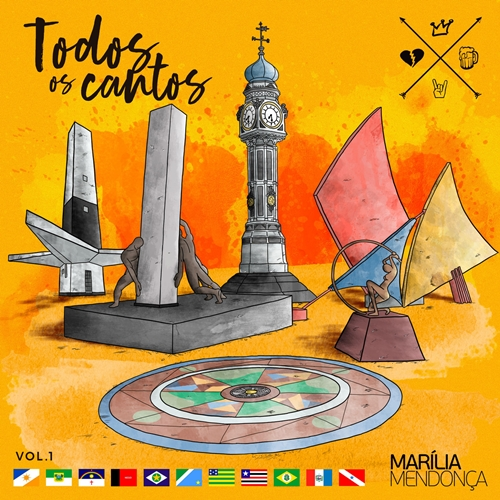
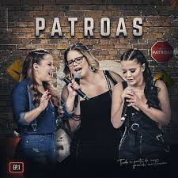

ALBUNS DA CANTORA
Primeiro álbum de Marília Mendonça, gravado sem platéia, e produzido pelo renomado produtor musical EDUARDO PEPATO. O disco conta com 16 faixa inéditas. Somente a faixa SENTIMENTO LOUCO conta com mais de 244 milhões de visualizações no Youtube.

O "DVD Realidade" foi o segundo projeto da cantora. Depois de tanto sucesso com o primeiro álbum, Marília apostou dessa vez em um projeto ao vivo. Gravado em Manaus AM, com um público de mais de 40 mil pessoas, o DVD Realidade conta com 17 faixas inéditas e a regravação da música Eu Sei de Cor, lançada no mesmo ano da gravação do segundo DVD.
.jpeg)
O projeto "Agora é que são elas 2", gravado em 2018, foi parceria de Marília Mendonça com a dupla Maiara & Maraisa. O projeto conta com 9 faixas inéditas,4 músicas somente da dupla (Saudade do Meu Mô, Maldade, Quase Tudo e Quem Foi Que Soprou), 4 de Marília (Parece Namoro, Coração Mal Assombrado, Estranho e Ausência), e 1 gravada com as três (A Culpa é Dele).

O projeto "Todos os Cantos" é resultado de um sonho que Marília Mendonça teve. A cantora revela que estava a procura de um tema para um novo projeto, e sonhou que chegava em praças públicas das capitais do Brasil de surpresa com seu violão, e cantava para um pequeno grupo de pessoas. E foi assim que nasceu um dos maiores projetos de sua carreira. Com um repertório de 18 faixas inéditas, Marília realizou shows de graça em 17 capitais do país. A cantora durante a pandemia revelou que quando tudo aquilo acabasse, ela daria continuidade ao projeto, pois queria passar por todo o Brasil.
O álbum "Patroas" é um projeto que Marília lançou em parceria com a dupla "Maiara & Maraisa" durante a pandemia. O projeto conta com 19 faixas, sendo 2 músicas inéditas, uma versão em português da canção Listen To Your Heart, e 16 regravações de cantores como Leandro & Leonardo, Zezé Di Camargo & Luciano.
